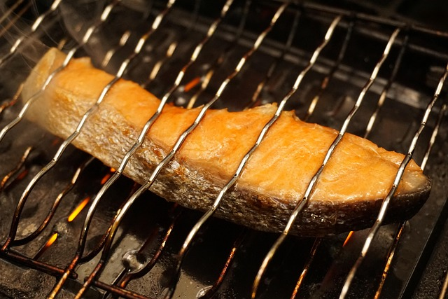

Recipe Index
Teriyaki Salmon

Description:
Teriyaki sauce might be one of the most well-known flavor profiles that comes out of Japan - it's salty and sweet and
caramelizes great when on grilled dishes. Salmon is also a very popular fish in Japanese cuisine, so the two together are a
natural pair.
Ingredients:
- Salmon, skin-on cut into 1 and half inch portions.
- 2 tablespoons soy sauce of good quality
- 1 tablespoon of sugar
- 1 tablespoon of mirin
- 1 tablespoon of sake
- 1/2 tablespoon cornstarch to thicken(optional)
Instructions:
- Mix all the ingredients - besides the salmon - in a bowl. If using cornstarch, make a slurry of it first with a
couple tablespoons of water for when you cook the sauce. Set aside mixture.
- Heat up a pan to medium. If you'd like, grease pan to help salmon not stick.
- Place skin side down to attain crispy skiin. Leave for 3 minutes.
- Turn over to opposite side and put a 2 tablespoons of water and pinch of salt in pan, cover and let steam for 4 minutes.
- Remove salmon and put other ingredients into pan, still on medium heat.
- Put sauce mixture into pan until it starts to thicken. If you would like it to thicken more, stir in cornstarch
slurry slowly.
- Return salmon to pan and pour sauce over a few times.
- Plate up the salmon and enjoy with your favorite sidedish!